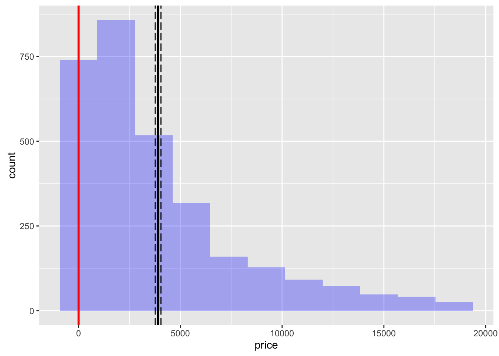
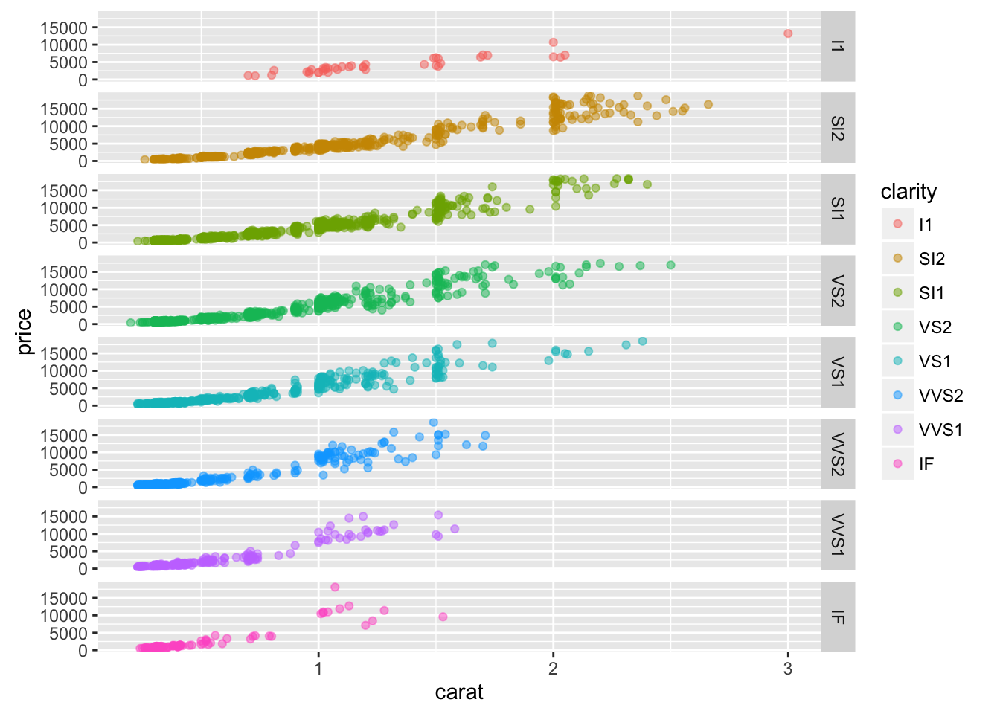
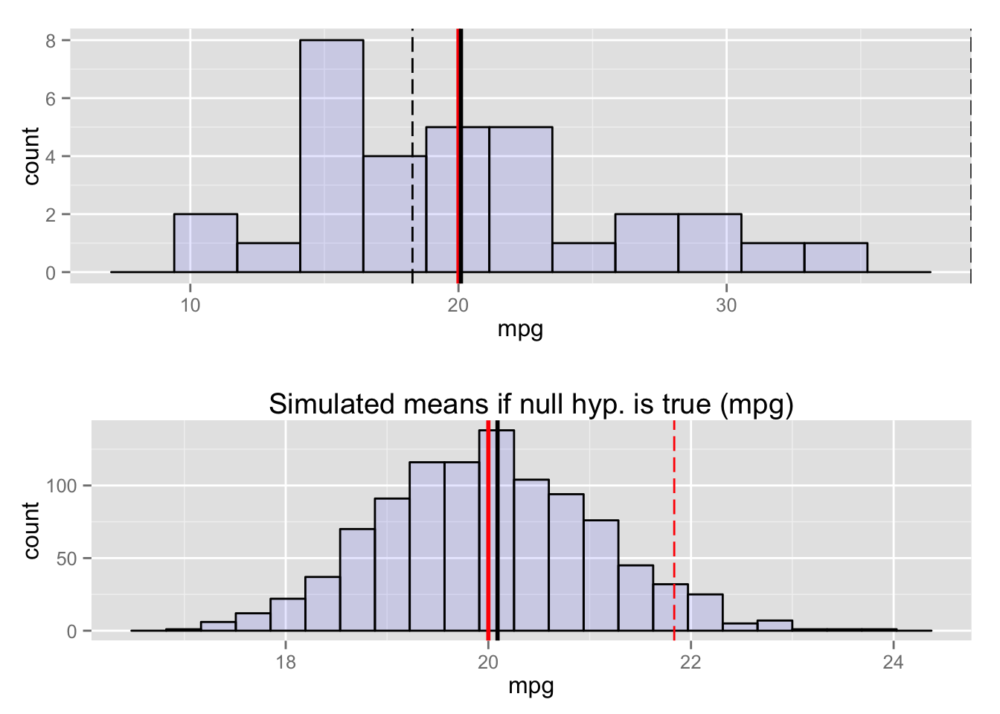
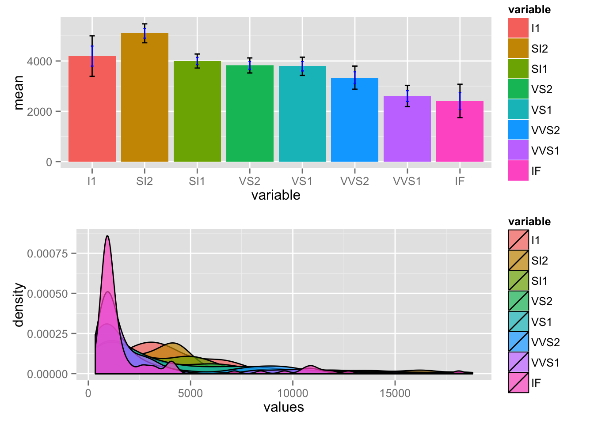
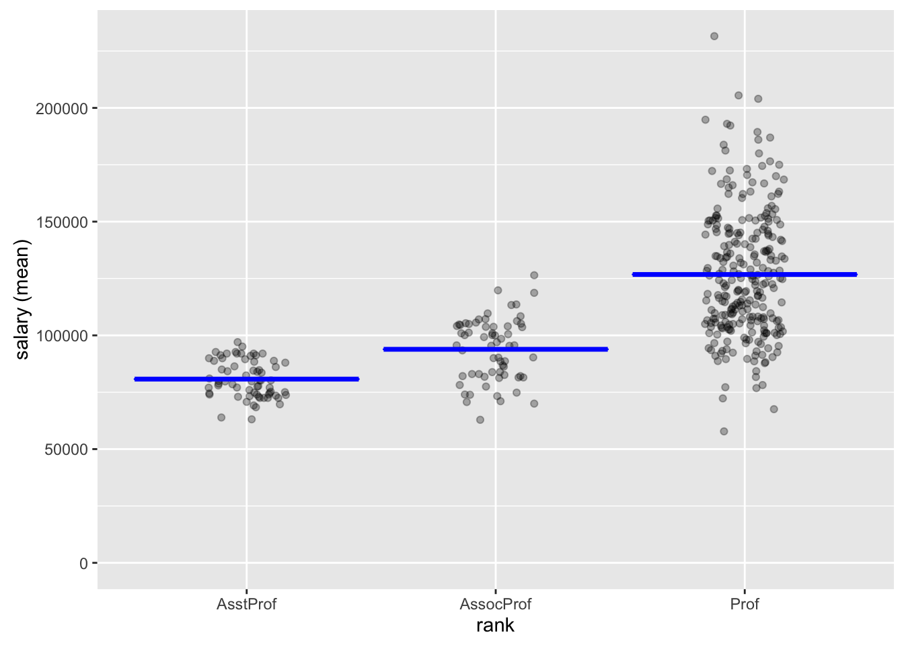
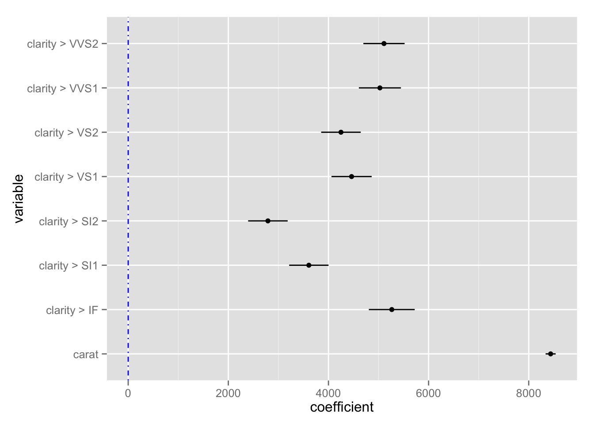
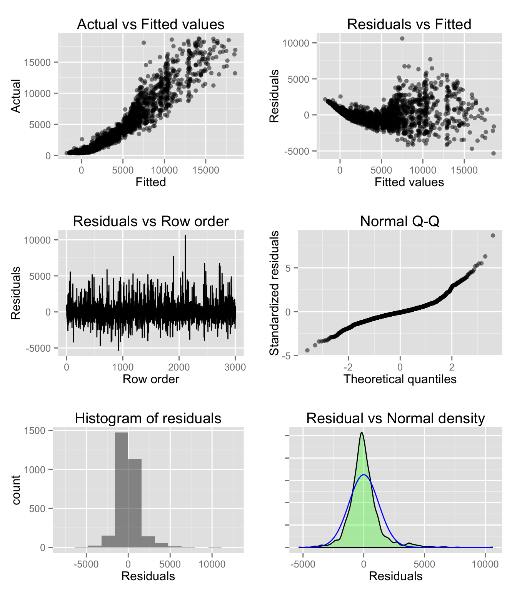
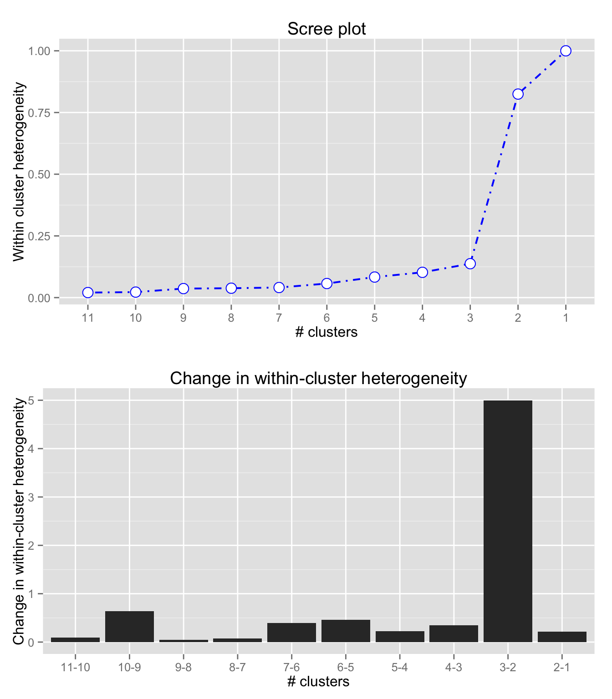
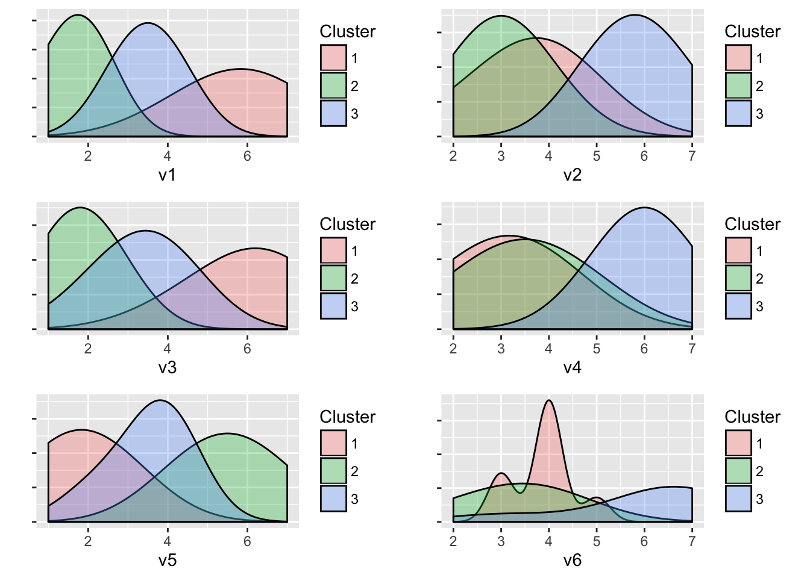

Programming with Radiant
Radiant’s goal is to provide access to the power of R for business analytics. Although Radiant’s web-interface can handle quite a few data and analysis tasks, at times you may prefer to write your own code. Radiant provides a bridge to programming in R(studio) by exporting the functions used for analysis. For example, you can run your analyses in Radiant and output the relevant function calls to an Rmarkdown document. Most pages in the app have an icon you can click (e.g., the book icon on the bottom left on the Basics > Means > Single mean page) to start working on your report. Press the Knit report button on the R > Report page to render the report to HTML. See Report page for details. The function manuals are available linked below:
You can also use Rstudio to render and edit Rmarkdown documents generated in Radiant. When you install and load Radiant it exports functions that can be called from R-code and/or an Rmarkdown document.
If you close Radiant by clicking the icon in the navigation bar and then click Stop after launching it from R(studio) you can paste the commands below into the command console to get the same output as in the browser interface.
result <- single_mean(diamonds, "price")
summary(result)Single mean test
Data : -----
Variable : price
Confidence: 0.95
Null hyp. : the mean of price = 0
Alt. hyp. : the mean of price is not equal to 0
mean sd n n_missing
3907.186 3956.915 3000 0
diff se t.value p.value df 2.5% 97.5%
3907.186 72.243 54.084 < .001 2999 3765.535 4048.837 ***
Signif. codes: 0 '***' 0.001 '**' 0.01 '*' 0.05 '.' 0.1 ' ' 1plot(result)
You can also call functions for visualization (see below) and access help from the console using ?visualize
visualize(diamonds, xvar = "carat", yvar = "price", type = "scatter",
facet_row = "clarity", color = "clarity")
As an example, you can render the single_mean.Rmd file into html (or PDF or Word if you prefer) in Rstudio. Try the code in radiant_rcode.R for a more extensive example.
To install the latest version of Radiant with complete documentation for offline access, open R(studio) and copy-and-paste the commands below:
install.packages("radiant", repos = "https://radiant-rstats.github.io/minicran/")
library(radiant)This will load the library and the required packages. To see the index of functions currently available in the Radiant package using the help(package = "radiant") command
Lets start by comparing the mean of a variable to a (population) value using R’s built-in mtcars dataset. This functionality is in the Radiant menu Basics > Means > Single mean. The analysis is conducted in function single_mean. Calling the summary method on the result object will show tabular output. Calling plot on the same result object will produce plots to help evaluate the hypothesis.
result <- single_mean(mtcars, "mpg", comp_value = 20, alternative = "greater")
summary(result)Single mean test
Data : -----
Variable : mpg
Confidence: 0.95
Null hyp. : the mean of mpg = 20
Alt. hyp. : the mean of mpg is > 20
mean sd n n_missing
20.091 6.027 32 0
diff se t.value p.value df 5% 100%
0.091 1.065 0.085 0.466 31 18.284 Inf
Signif. codes: 0 '***' 0.001 '**' 0.01 '*' 0.05 '.' 0.1 ' ' 1plot(result, plots = c("hist","simulate"))
To compare the mean price of diamonds across different levels of clarity we can call the compare_means function:
result <- compare_means(diamonds, "clarity", "price")
summary(result)Pairwise mean comparisons (t-test)
Data : -----
Variables : clarity, price
Samples : independent
Confidence: 0.95
Adjustment: None
clarity mean n sd se ci
I1 4194.775 40 2519.678 398.396 805.832
SI2 5100.189 529 4406.982 191.608 376.407
SI1 3998.577 721 3813.190 142.011 278.804
VS2 3822.967 661 3917.484 152.372 299.193
VS1 3789.181 442 3880.907 184.596 362.797
VVS2 3337.820 284 3932.706 233.363 459.348
VVS1 2608.460 224 3201.282 213.895 421.513
IF 2411.697 99 3330.560 334.734 664.268
Null hyp. Alt. hyp. diff p.value
I1 = SI2 I1 not equal to SI2 -905.414 0.045 *
I1 = SI1 I1 not equal to SI1 196.198 0.645
I1 = VS2 I1 not equal to VS2 371.808 0.387
I1 = VS1 I1 not equal to VS1 405.594 0.36
I1 = VVS2 I1 not equal to VVS2 856.955 0.068 .
I1 = VVS1 I1 not equal to VVS1 1586.315 0.001 ***
I1 = IF I1 not equal to IF 1783.078 0.001 ***
SI2 = SI1 SI2 not equal to SI1 1101.612 < .001 ***
SI2 = VS2 SI2 not equal to VS2 1277.222 < .001 ***
SI2 = VS1 SI2 not equal to VS1 1311.008 < .001 ***
SI2 = VVS2 SI2 not equal to VVS2 1762.369 < .001 ***
SI2 = VVS1 SI2 not equal to VVS1 2491.729 < .001 ***
SI2 = IF SI2 not equal to IF 2688.492 < .001 ***
SI1 = VS2 SI1 not equal to VS2 175.610 0.399
SI1 = VS1 SI1 not equal to VS1 209.396 0.369
SI1 = VVS2 SI1 not equal to VVS2 660.757 0.016 *
SI1 = VVS1 SI1 not equal to VVS1 1390.117 < .001 ***
SI1 = IF SI1 not equal to IF 1586.880 < .001 ***
VS2 = VS1 VS2 not equal to VS1 33.786 0.888
VS2 = VVS2 VS2 not equal to VVS2 485.147 0.082 .
VS2 = VVS1 VS2 not equal to VVS1 1214.507 < .001 ***
VS2 = IF VS2 not equal to IF 1411.270 < .001 ***
VS1 = VVS2 VS1 not equal to VVS2 451.361 0.13
VS1 = VVS1 VS1 not equal to VVS1 1180.721 < .001 ***
VS1 = IF VS1 not equal to IF 1377.484 < .001 ***
VVS2 = VVS1 VVS2 not equal to VVS1 729.360 0.022 *
VVS2 = IF VVS2 not equal to IF 926.123 0.024 *
VVS1 = IF VVS1 not equal to IF 196.763 0.621
Signif. codes: 0 '***' 0.001 '**' 0.01 '*' 0.05 '.' 0.1 ' ' 1plot(result, plots = c("bar","density"))
These datasets are available after loading the radiant library. We can also load data through Radiant’s web interface and then access the data from the console after closing the app. Start radiant using the command below and then click select Examples from the Load data of type dropdown in the Data > Manage tab. Then close the app by clicking the power icon and then clicking Stop.
## start radiant in Rstudio, load the example data, then click the power icon and Stop
radiant()We can now use the compare_means function to evaluate salary data for professors of different ranks using:
result <- compare_means(salary, "rank", "salary")
summary(result)Pairwise mean comparisons (t-test)
Data : -----
Variables : rank, salary
Samples : independent
Confidence: 0.95
Adjustment: None
rank mean n sd se ci
AsstProf 80775.99 67 8174.113 998.627 1993.823
AssocProf 93876.44 64 13831.700 1728.962 3455.056
Prof 126772.11 266 27718.675 1699.541 3346.322
Null hyp. Alt. hyp. diff p.value
AsstProf = AssocProf AsstProf not equal to AssocProf -13100.45 < .001 ***
AsstProf = Prof AsstProf not equal to Prof -45996.12 < .001 ***
AssocProf = Prof AssocProf not equal to Prof -32895.67 < .001 ***
Signif. codes: 0 '***' 0.001 '**' 0.01 '*' 0.05 '.' 0.1 ' ' 1plot(result)
An alternative way to write this code is to use piping (see dplyr and magrittr vignettes)):
salary %>% compare_means("rank", "salary") %>% {summary(.); plot(.)}
Pairwise mean comparisons (t-test)
Data : -----
Variables : rank, salary
Samples : independent
Confidence: 0.95
Adjustment: None
rank mean n sd se ci
AsstProf 80775.99 67 8174.113 998.627 1993.823
AssocProf 93876.44 64 13831.700 1728.962 3455.056
Prof 126772.11 266 27718.675 1699.541 3346.322
Null hyp. Alt. hyp. diff p.value
AsstProf = AssocProf AsstProf not equal to AssocProf -13100.45 < .001 ***
AsstProf = Prof AsstProf not equal to Prof -45996.12 < .001 ***
AssocProf = Prof AssocProf not equal to Prof -32895.67 < .001 ***
Signif. codes: 0 '***' 0.001 '**' 0.01 '*' 0.05 '.' 0.1 ' ' 1We can also run regressions and get output in a format that would require many lines of code to produce from scratch:
result <- regress(diamonds, "price", c("carat","clarity"))
summary(result, sum_check = "confint")Linear regression (OLS)
Data : -----
Response variable : price
Explanatory variables: carat, clarity
Null hyp.: the effect of x on price is zero
Alt. hyp.: the effect of x on price is not zero
coefficient std.error t.value p.value
(Intercept) -6780.993 204.952 -33.086 < .001 ***
carat 8438.030 51.101 165.125 < .001 ***
clarity|SI2 2790.760 201.395 13.857 < .001 ***
clarity|SI1 3608.531 200.508 17.997 < .001 ***
clarity|VS2 4249.906 201.607 21.080 < .001 ***
clarity|VS1 4461.956 204.592 21.809 < .001 ***
clarity|VVS2 5109.476 210.207 24.307 < .001 ***
clarity|VVS1 5027.669 214.251 23.466 < .001 ***
clarity|IF 5265.170 233.658 22.534 < .001 ***
Signif. codes: 0 '***' 0.001 '**' 0.01 '*' 0.05 '.' 0.1 ' ' 1
R-squared: 0.904, Adjusted R-squared: 0.904
F-statistic: 3530.024 df(8,2991), p.value < .001
Nr obs: 3,000
coefficient 2.5% 97.5% +/-
(Intercept) -6780.993 -7182.855 -6379.131 401.862
carat 8438.030 8337.834 8538.227 100.196
clarity|SI2 2790.760 2395.873 3185.646 394.886
clarity|SI1 3608.531 3215.384 4001.679 393.148
clarity|VS2 4249.906 3854.604 4645.208 395.302
clarity|VS1 4461.956 4060.801 4863.111 401.155
clarity|VVS2 5109.476 4697.311 5521.640 412.165
clarity|VVS1 5027.669 4607.574 5447.764 420.095
clarity|IF 5265.170 4807.024 5723.317 458.147predict(result, pred_cmd = "carat = 1:10")Linear regression (OLS)
Data : -----
Response variable : price
Explanatory variables: carat, clarity
Prediction command : carat = 1:10
clarity carat Prediction 2.5% 97.5% +/-
SI1 1 5265.569 2859.633 7671.505 2405.936
SI1 2 13703.599 11294.952 16112.246 2408.647
SI1 3 22141.629 19726.114 24557.145 2415.515
SI1 4 30579.660 28153.155 33006.165 2426.505
SI1 5 39017.690 36576.130 41459.250 2441.560
SI1 6 47455.720 44995.114 49916.327 2460.607
SI1 7 55893.751 53410.198 58377.303 2483.552
SI1 8 64331.781 61821.491 66842.072 2510.291
SI1 9 72769.811 70229.110 75310.513 2540.701
SI1 10 81207.842 78633.187 83782.496 2574.655plot(result, plots = "coef")
plot(result, plots = "dashboard")
As another example, imagine that you want to segment a sample of respondents based on their toothpaste attitudes. Below is the required code to produce results using functions from the Radiant package. For help on the commands and options for cluster analysis use ?hier_clus, ?plot.hier_clus, and ?kmeans_clus. See also the Radiant function manuals linked above.
## load the radiant library (not needed if run in Radiant's R > Code tab)
library(radiant.multivariate)
## load the data directly from a url
shopping <- loadrda_url("https://github.com/radiant-rstats/radiant.multivariate/blob/master/data/shopping.rda?raw=true")
## run hierarchical cluster analysis on the shopping data, variables v1 through v6
result <- hier_clus(shopping, "v1:v6")
## summary - not much here - plots are more important
summary(result)Hierarchical cluster analysis
Data : -----
Variables : v1:v6
Method : ward.D
Distance : sq.euclidian
Observations: 20 ## check the help file on how to plot results from hierarchical cluster analysis
## default plots - looks like there is a big jump in overall within-cluster
## heterogeneity in the step from 3 to 2 segments
plot(result)
## show the dendrogram with cutoff at 0.1
plot(result, plots = "dendro", cutoff = 0.1)
## plots created above suggest 3 clusters may be most appropriate
## use kmeans to create the clusters
## generate output and save clustermembership to the datafile
result <- kmeans_clus(shopping, vars = "v1:v6", nr_clus = 3)
summary(result)K-means cluster analysis
Data : -----
Variables : v1:v6
Method : ward.D
Distance : sq.euclidian
Observations: 20
Generated : 3 clusters of sizes 8, 6, 6
Cluster means:
v1 v2 v3 v4 v5 v6
Cluster 1 5.75 3.62 6.00 3.12 1.88 3.88
Cluster 2 1.67 3.00 1.83 3.50 5.50 3.33
Cluster 3 3.50 5.83 3.33 6.00 3.50 6.00
Percentage of within cluster variance accounted for by each cluster:
Cluster 1 40.31%
Cluster 2 25.98%
Cluster 3 33.71%
Between cluster variance accounts for 73.93% of the
total variance in the data (higher is better).plot(result)
shopping <- store(result)
## was the data really changed?
head(shopping) v1 v2 v3 v4 v5 v6 kclus3
1 6 4 7 3 2 3 1
2 2 3 1 4 5 4 2
3 7 2 6 4 1 3 1
4 4 6 4 5 3 6 3
5 1 3 2 2 6 4 2
6 6 4 6 3 3 4 1See if you can reproduce this output in the radiant web-interface. Start Radiant from the Addins dropdown in Rstudio. You can also run code inside the Radiant app in the R > Code tab. See Code page for details.